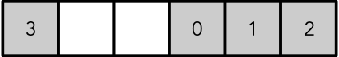

Optimizing a copy-on-write double-ended queue in Swift
I implemented a double-ended queue type (deque) in Swift to satisfy a particular need in one of my programs. The algorithm itself isn’t very interesting and I’ll only discuss it briefly.
Instead, I’ll focus on the challenges involved in implementing a copy-on-write type in Swift and optimizing the code to satisfy my core aim of running at least as fast as Array when used as a first-in-first-out (FIFO) queue for queue lengths around 20 items.
It turns out to be a tricky optimization task due to problems with the functions used to access the copy-on-write buffer. Join me for a look at optimizing a Swift copy-on-write collection.
Introduction
The Swift standard library doesn’t have many built-in container types. It was Swift 1.2 before it introduced a basic Set type. While there are a number of utility storage types, like CollectionOfOne, in general, Swift offers an Array, Dictionary and Set as the only general purpose collection types.
Swift lacks any type ideally suited as a FIFO queue. In other standard libraries, this is commonly handled by a double-ended queue or Deque type.
You won’t find a double-ended queue in the Foundation library either but the CFArray/NSMutableArray addresses this deficiency by devolving into a binary heap under queue-like operations. This lets you use an NSMutableArray as a double-ended queue. A million years ago (in 2005) the Ridiculous Fish blog wrote about this in an article elaborately titled: “Array”. It’s a fascinating read, if you haven’t read it before. However, elements in an NSMutableArray need to be heap allocated and the container itself is not copy-on-write – neither of which seem ideal in Swift so I didn’t want to use this option.
There is an existing, commonly used Deque implementation which appears to be solid and well maintained. However, I was predominantly interested in queues of length 0 to 20 with an initial capacity of zero and under these conditions, I found this implementation performed slower than Array. I chose not to use this option because I wanted a better focus on this small queue, small memory footprint use-case.
I could try to graft a Swift copy-on-write wrapper onto a C++ std::deque but ultimately, I chose not to take this option either – although I’d still like to try this in future as I’m curious to work out what would be involved in using C++ to store Swift data (I assume C++ would function as little more than byte-level storage).
Ultimately, I found myself in a position where I would need to write the type myself. I wanted to satisfy the following aims:
- Copy-on-write
- No heap allocation until the first element is added
- Automatic growing and downsizing of storage (down to a minimum capacity)
- As fast as
Array(or faster) for pushing 10 elements then popping them all in a FIFO fashion, considerably faster for 50. - Implement all of
RandomAccessCollection,RangeReplaceableCollection,ExpressibleByArrayLiteralandCustomDebugStringConvertible
Since it is the easiest type of double-ended queue to implement, I’ll be implementing a “circular-buffer” style double-ended queue – one where the first element is allowed to have an “offset” from the front of the storage and successive pops from one end and pushes to the other will cause initialized values in the queue to offset within the storage until they wrap around at the end.

An Array would continually move the values so index 0 was always at the start of the buffer. By comparison, the circular-buffer allows the index 0 element to be offset within the buffer. The caveat is that the storage might not be contiguous, it may overrun the end of the storage and wrap around to the beginning again.
This is not usually the most optimal approach to a double-ended queue (that would involve a more complex split-buffer or heap storage) but we’ll see how it goes.
Copy-on-write in Swift
In Swift, idiomatic collection types are usually “copy-on-write”. This means that assigning a collection to a new variable merely increases the reference count to the original. Subsequent attempts to mutate a multiply referenced collection cause the mutated reference to copy itself to a unique location and mutate the unique, rather than shared version.
This is how Array, Dictionary and Set behave.
For this to work, the underlying storage of the collection must be a reference counted class type. To avoid a redundant allocation (one for the reference counted class type and one for the raw storage buffer) we use the create function on ManagedBufferPointer<Header, Element> to allocate a class type (usually a subclass of ManagedBuffer<Header, Element>) and a raw storage buffer in a single allocation.
Combined with the isKnownUniquelyReferenced function (which tests if any class type is singly or multiply reference) this gives us all the tools required.
Overview of the Deque design
A rough description of a Deque type using a ManagedBuffer<Header, Element> would then look like this:
public struct Deque<T>: RandomAccessCollection, RangeReplaceableCollection,
ExpressibleByArrayLiteral, CustomDebugStringConvertible {
public typealias Index = Int
public typealias Indices = CountableRange<Int>
public typealias Element = T
var buffer: ManagedBuffer<DequeHeader, T>? = nil
public init()
public init(arrayLiteral: T...)
public var debugDescription: String
public subscript(_ at: Index) -> T
public var startIndex: Index
public var endIndex: Index
public mutating func replaceSubrange<C>(_ subrange: Range<Int>, with newElements: C)
where C: Collection, C.Iterator.Element == T {
if isKnownUniquelyReferenced(&buffer) && /* values fit in existing storage */ {
// Mutate in place
} else {
// Use the `create` method on ManagedBuffer
}
}
}
struct DequeHeader {
var offset: Int
var count: Int
var capacity: Int
}That’s the entire set of required methods, properties and typealiases. You get quite a bit for free from the Collection protocols that all ultimately gets channeled through the subscript or the replaceSubrange function. It gets a lot more difficult if the Index isn’t Int but fortunately that’s not the case here.
Storing values safely in an uninitialized buffer
The first tricky hurdle to overcome is safely maintaining reference counts for data stored in an unsafe buffer.
In typical Swift programming, automatic reference counting lets us ignore reference counts. This is not typical Swift programming. When the buffer is allocated, it is “uninitialized” (doesn’t contain a normal value). If we were to try and assign values into the buffer normally:
buffer.withUnsafeMutablePointerToElements { pointer in
pointer[index] = newValue
}Swift’s automatic reference counting would try to automatically release the object at pointer[index] before assigning newValue to that location. This is a problem: when uninitialized, the location could be garbage data and attempting to release its contents could cause a EXC_BAD_ACCESS or other crash or misbehavior.
The way around this problem is that we must manually manage all memory in the buffer. This means copying values into the buffer with initialize:
buffer.withUnsafeMutablePointerToElements { pointer in
pointer.advanced(by: index).initialize(to: newValue)
}or if we’re moving values from one buffer to another (releasing in the old location):
oldBuffer.withUnsafeMutablePointerToElements { oldPointer in
newBuffer.withUnsafeMutablePointerToElements { newPointer in
newPointer.advanced(by: newIndex).moveInitialize(from: oldPointer.advanced(by:
oldIndex), count: moveCount)
}
}and when we’re done, we need to release the values:
buffer.withUnsafeMutablePointerToElements { pointer in
pointer.advanced(by: offset).deinitialize(count: valueCount)
}Limitations of ManagedBuffer
So we’re responsible for manually maintaining reference counts – including manually releasing values before the buffer is destroyed.
In most cases, this means that we need to perform deinitialize in a deinit method. This means that we can’t rely on the default ManagedBuffer class alone: while it calls deinitialize on the Header, it doesn’t do anything with the Element buffer.
At a minimum, we need to subclass ManagedBuffer and add a deinitialize for any values that are still in the buffer at deinit time.
Here’s one I prepared earlier
I went ahead and implemented the entire Deque based on the information I’ve discussed so far. The implementation is a little tedious but isn’t very difficult. It’s about 350 lines (including comments and blank lines). You can view the initial version here. Later in this article, I will refer back to this version as the “unoptimized” version (although it also contains a few bugs that have subsequently been fixed on “master”, so please don’t directly use this version).
While not required, I included optimized versions of the following functions:
append(_:)insert(_:, at:)remove(at:)
to improve performance for commonly expected operations.
The implementation also includes a runtime specified minimumCapacity so that the queue can dynamically grow and shrink but won’t shrink below the minimum (the default value of this is zero and falling back to zero capacity causes the entire buffer object tob be deallocated).
Since the key metric that I’m using the gauge success or failure is how this compares relative to Array for small queues, I be evaluating performance with the following test:
let outerCount = 100_000
let innerCount = 20
var accumulator = 0
for _ in 1...outerCount {
var deque = Deque<Int>()
for i in 1...innerCount {
deque.append(i)
accumulator ^= (deque.last ?? 0)
}
for _ in 1...innerCount {
accumulator ^= (deque.first ?? 0)
deque.remove(at: 0)
}
}
XCTAssert(accumulator == 0)This test case appends 20 elements sequentially at the end of a new queue and then removes them sequentially from the front. This process is them repeated 100000 times.
I’ll compare against Array. The only difference between the two tests is the var deque = Deque<Int> line will be var deque = Array<Int> for the Array version.
| Time taken (seconds) | |
|---|---|
Initial Deque implementation |
16.217 |
Array |
0.214 |
That’s not good. What’s the problem?
Problem number 1: Specialization needed
The first difficulty is that, relative to third-party code, the standard library cheats. Where my Deque implementation was compiled into a separate module and therefore received no generic specialization, the Swift standard library is always compiled as though it is part of the same module – so it can always take advantage of generic specialization.
The separate module for my Deque implementation is preventing specialization of the Deque type and functions and causing the following accessor into the buffer:
buffer.withUnsafeMutablePointerToElements { header, elements in
elements.advanced(by: header.pointee.offset).initialize(to: newValue)
}to use capturing closures with heap allocation overhead, and this is responsible for most of the execution time.
Performance problems associated with separate modules is a problem I’ve discussed previously. The solution is similar: ensure that the Deque and the test case are linked as part of the same module and ensure that “Whole program optimization” is enabled.
| Time taken (seconds) | |
|---|---|
Initial Deque compiled in the same module |
0.589 |
Array |
0.204 |
Okay, that’s more than an order of magnitude better but it’s still not great. What’s the problem now?
Problem number 2: ManagedBuffer doesn’t inline properly
It turns out that despite being fully specialized, Swift is still not inlining some of the closures. For reasons I can’t quite understand, Swift is refusing to inline the withUnsafeMutablePointers and related functions.
I therefore implemented the ManagedBuffer versions of these functions on my own DequeBuffer and stopped my DequeBuffer being a subclass of ManagedBuffer:
final class DequeBuffer<T> {
class func create(capacity: Int, count: Int) -> DequeBuffer<T> {
let p = ManagedBufferPointer<DequeHeader, T>(bufferClass: self, minimumCapacity:
capacity) { buffer, capacityFunction in
DequeHeader(offset: 0, count: count, capacity: capacity)
}
return unsafeDowncast(p.buffer, to: DequeBuffer<T>.self)
}
func withUnsafeMutablePointers<R>(_ body: (UnsafeMutablePointer<DequeHeader>,
UnsafeMutablePointer<T>) throws -> R) rethrows -> R {
return try ManagedBufferPointer<DequeHeader, T>(unsafeBufferObject:
self).withUnsafeMutablePointers(body)
}
func withUnsafeMutablePointerToElements<R>(_ body: (UnsafeMutablePointer<T>) throws
-> R) rethrows -> R {
return try ManagedBufferPointer<DequeHeader, T>(unsafeBufferObject:
self).withUnsafeMutablePointerToElements(body)
}
func withUnsafeMutablePointerToHeader<R>(_ body: (UnsafeMutablePointer<DequeHeader>)
throws -> R) rethrows -> R {
return try ManagedBufferPointer<DequeHeader, T>(unsafeBufferObject:
self).withUnsafeMutablePointerToHeader(body)
}
deinit {
withUnsafeMutablePointers { header, body in
Deque<T>.deinitialize(range: 0..<header.pointee.count, header: header, body: body)
}
}
}| Time taken (seconds) | |
|---|---|
Deque with custom buffer class |
0.354 |
Array |
0.207 |
Okay but we’re still a factor of 2 slower than desired.
Problem number 3: Underlying closures still won’t behave
Bypassing the ManagedBufferwithUnsafeMutablePointers function with my own implementation improved things but now profiling reports the underlying ManagedBufferPointer.withUnsafeMutablePointers function as the biggest time consumer.
Out of frustration, I dug into the Swift standard library source code to work out exactly what the ManagedBufferPointer.withUnsafeMutablePointers function does so I could bypass it.
The following unsafe accessors and helpers on my DequeBuffer type is the result:
static var headerOffset: Int {
return Int(roundUp(UInt(MemoryLayout<HeapObject>.size), toAlignment:
MemoryLayout<DequeHeader>.alignment))
}
static var elementOffset: Int {
return Int(roundUp(UInt(headerOffset) + UInt(MemoryLayout<DequeHeader>.size),
toAlignment: MemoryLayout<T>.alignment))
}
var unsafeElements: UnsafeMutablePointer<T> {
return Unmanaged<DequeBuffer<T>>.passUnretained(self).toOpaque().advanced(by:
DequeBuffer<T>.elementOffset).assumingMemoryBound(to: T.self)
}
var unsafeHeader: UnsafeMutablePointer<DequeHeader> {
return Unmanaged<DequeBuffer<T>>.passUnretained(self).toOpaque().advanced(by:
DequeBuffer<T>.headerOffset).assumingMemoryBound(to: DequeHeader.self)
}I then use these accessors inside my withUnsafeMutablePointers implementations instead of calling down into ManagedBufferPointer.
As you can see, all I’m really doing is advancing the self pointer to the correct locations for the Header and Elements in the buffer allocated by ManagedBufferPointer – which is the same work that ManagedBufferPointer would perform. My code cannot run the defer { _fixLifetime(_nativeBuffer) } call that the ManagedBufferPointer.withUnsafeMutablePointers call runs but my understanding is that this is implied by instance method invocation on self so the lifetime should be safely ensured.
| Time taken (seconds) | |
|---|---|
Final Deque implementation |
0.132 |
Array |
0.205 |
We’re finally faster than Swift’s builtin Array type in this test case.
Isn’t this risky?
I’m offsetting a pointer into the middle of a buffer I didn’t allocate and assuming the layout within the buffer won’t change in future.
Isn’t this an ugly hack? Doesn’t this go against the “maintainable apps” aim that I declared for Cocoa with Love in “A new era for Cocoa with Love”?
Yes and yes.
It’s disappointing but the reality is that if we implement the Deque using ManagedBufferPointer to allocate the underlying storage, we’re forced to choose between an “optimized” version that delivers reasonable performance or an “unoptimized” version that is so slow that it isn’t really competitive with Array until queue lengths reach 80 to 200 (depending on initial capacity).
Frankly, the performance problems with the “unoptimized” version limit its usefulness so much that it’s practically useless. If you’re paranoid about memory safety, then you’d be better off simply using an Array or writing a Deque without ManagedBufferPointer.
I’ve chosen to go with the optimized version and guard against any potential unsafety with assert statements on construction of DequeBuffer that confirm the values returned from accessors remain the same as the results from ManagedBufferPointer would be. This should guard against the layout changing and the pointers being invalid.
Since the external interface of the class is identical in both cases, it should be trivial to copy the DequeBuffer implementation from the “unoptimized” version back into the main version after the issues in Swift causing performance problems here are fixed.
Comparing with std::deque
Beating the Swift Array isn’t really a giant accomplishment: it’s not designed to be high performance in this case. Let’s instead compare with something designed for use as a FIFO queue.
Here’s how Deque compares with libc++’s std::deque:
| Time taken (seconds) | |
|---|---|
Final Deque implementation |
0.132 |
std::deque |
0.043 |
Ouch. How did we get beaten again?
While std::deque’s “split-buffer” is a more efficient implementation than our “circular-buffer” implementation (since extending the capacity doesn’t require moving the existing contents to the newly allocated buffer), that’s not the source of the problem here.
The source of the problem is that std::deque performs just 2 allocations to exceed a capacity of 20 (two allocations of 16 elements) whereas my implementation takes 4 allocations (reallocations for 2, 6, 14 and 30 elements).
If I set a minimum capacity of 20 on construction of my Deque, the numbers go the other way:
| Time taken (seconds) | |
|---|---|
Final Deque with minimum capacity of 20 |
0.039 |
std::deque |
0.045 |
Hardly a fair fight when I rig the conditions like this but the point is that the two are competitive, give or take allocation patterns, and that’s sufficient.
Usage
The project containing this
Dequeimplementation is available on github: mattgallagher/CwlUtils.
The CwlDeque.swift file is fully self-contained so you can just copy the file, if that’s all you need. Otherwise, the ReadMe.md file for the project contains detailed information on cloning the whole repository and adding the framework it produces to your own projects.
NOTE: the CwlUtils project compiles CwlDeque.swift inside its own module. If you want best performance, it’s better to take the CwlDeque.swift file and compile it inside your own module instead.
As mentioned earlier, the repository also contains the “conservative” version of CwlDeque.swift that omits the unsafe pointer offsets.
Conclusion
This was partly fun, partly an exercise in frustration.
It was fun to implement a basic copy-on-write, circular-buffer deque in Swift. Needing to carefully initialize and deinitialize to manually manage reference counts seems like a delightful throwback to pre-ARC Objective-C but it’s straightforward once you realize that it’s required.
The frustration came as I tried to understand the cause of performance problems. While I know a little about the Swift compiler internals, optimizing code like this is still largely a black-box exercise for me: looking at profiling results and haphazardly trying things on problem areas, hoping the situation will improve somehow. I don’t really know why ManagedBuffer and ManagedBufferPointer refused to inline correctly or if I could have fixed the problem a different way. I do know that I shouldn’t have needed to do anything – the conservative and optimized versions should have had identical performance.
The final solution delivers excellent performance but I’m not happy with the pointer arithmetic it required. With the assert statements double checking the pointer arithmetic, it should remain correct but ultimately, I look forward to reverting the ManagedBufferPointer avoidance changes once Swift addresses the underlying cause of the performance problems.
Looking forward…
In a future article, I will be sharing my primary use case for this Deque type (although it will likely be a few months before I get there).
Updating Cocoa with Love for Swift 3
Specifying function execution contexts